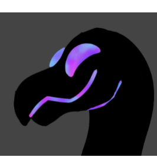
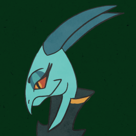
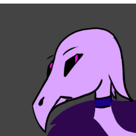
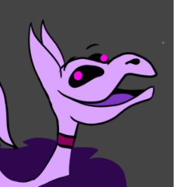

akinaas the youngist guardian she learns to prove herself. she tends to be a scardy cat always looking to run away instead of fighting. she has a special bond with her pet ripley to the point of being able to undestand them.
age: 22
pronouns: she/her sexuality: lesbian |

munimuni is know for they're many talents as a con artist and a inventor. they're kwik on there feet and uses they're charisma to there benifit. despite being a show of muni is still on the run
age: 22
pronouns: they/them sexuality: pansxual |

ripleyRIPLEY!!!!!
RIPLEY!!!!!
RIPLEY!!!!! RIPLEY!!!!! |

adlineas one of the most powerfull guardians adline
age: 56
pronouns: she/her sexuality: bisexual |

azur
age: 53
pronouns: he/him sexuality: straight |

asmar
age: 53
pronouns: they/them sexuality: asexual |